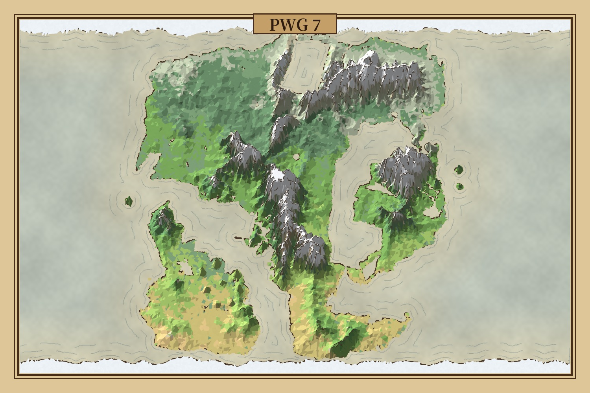
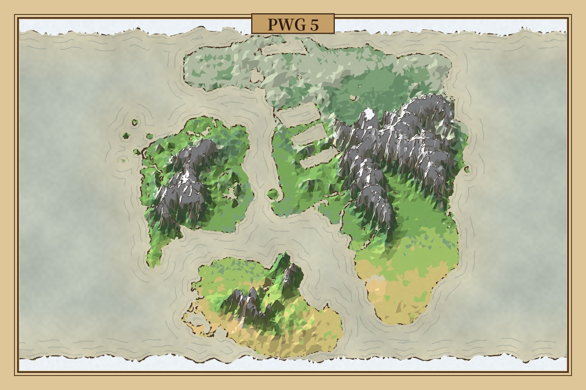
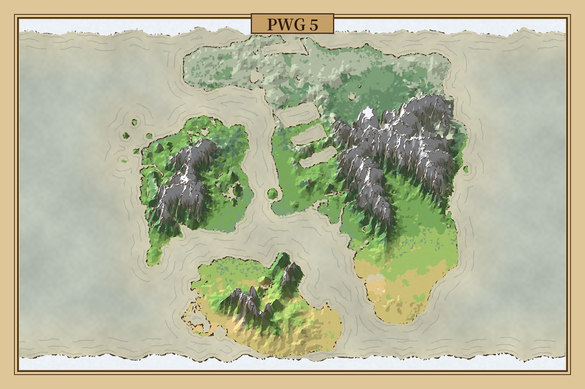
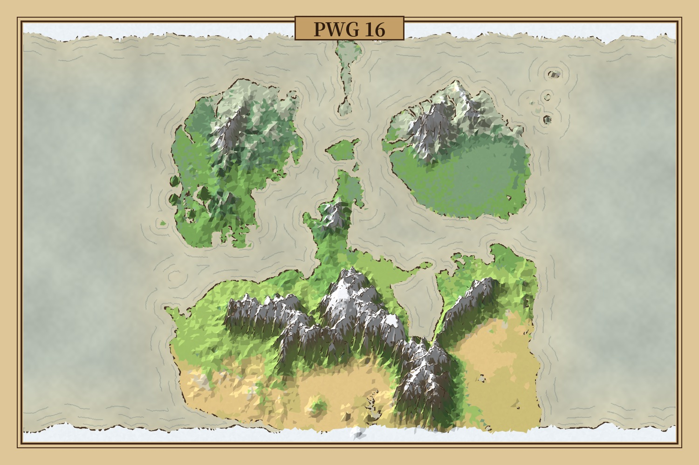
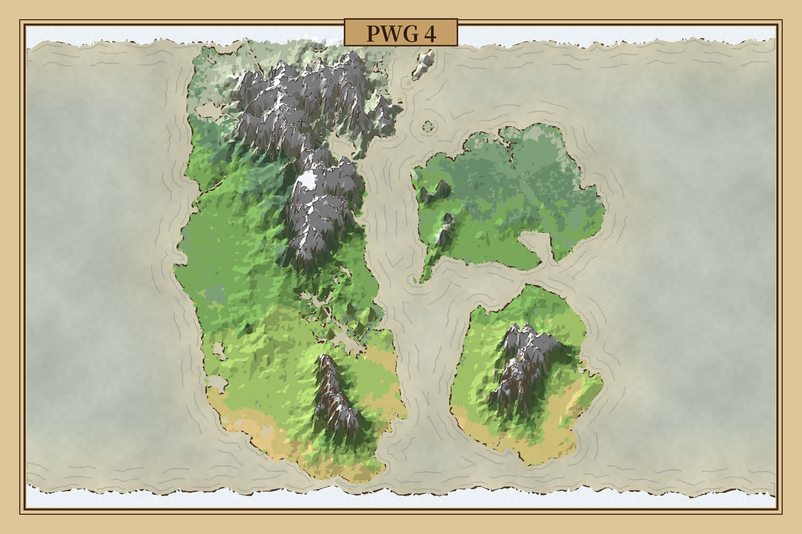
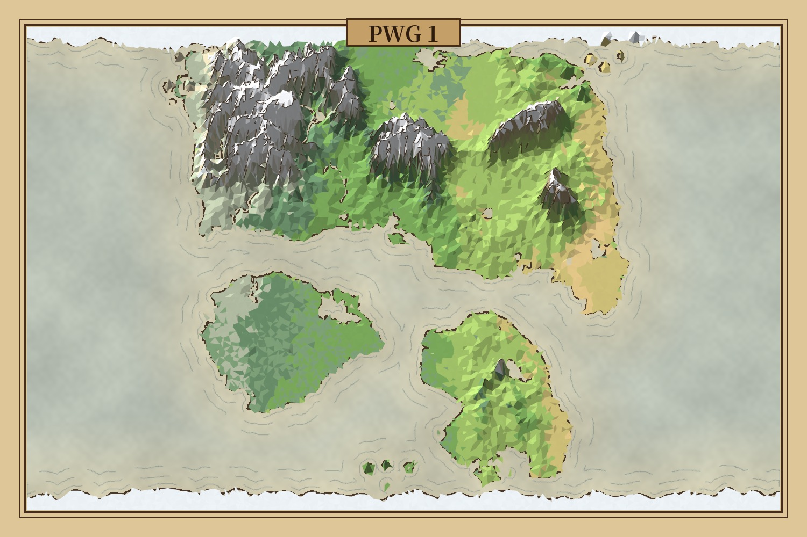

概要: mapstyle42よりも更に細かく、面の間隔を0.5倍(mapstyle40の半分)にしました。面の数はmapstyle42の約2倍です。ほかの設定は同じです。各図は上=mapstyle42、下=今回。
| 世界 | mapstyle41 | mapstyle40 | mapstyle42 | 今回 |
|---|---|---|---|---|
| seed7 | 5,020 | 9,216 | 17,334 | 33,699 |
| seed5 | 5,133 | 9,386 | 17,563 | 34,088 |
| seed16 | 4,752 | 8,857 | 16,735 | 32,621 |
| seed4 | 4,770 | 8,872 | 16,789 | 32,622 |
| seed1 | 4,766 | 8,873 | 16,746 | 32,570 |
描画の時間は約2.3秒(mapstyle42は約1.7秒)。

絵番号 E180
絵番号 E176
絵番号 E181 絵番号 E177
絵番号 E177
絵番号 E182 絵番号 E178
絵番号 E178
絵番号 E183
絵番号 E179次: 面の細かさを、41(粗い)・40(中間)・42・今回(最も細かい)から決めていただく。